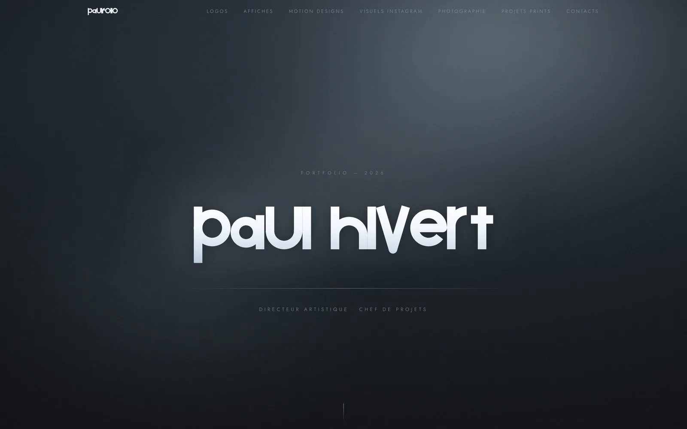
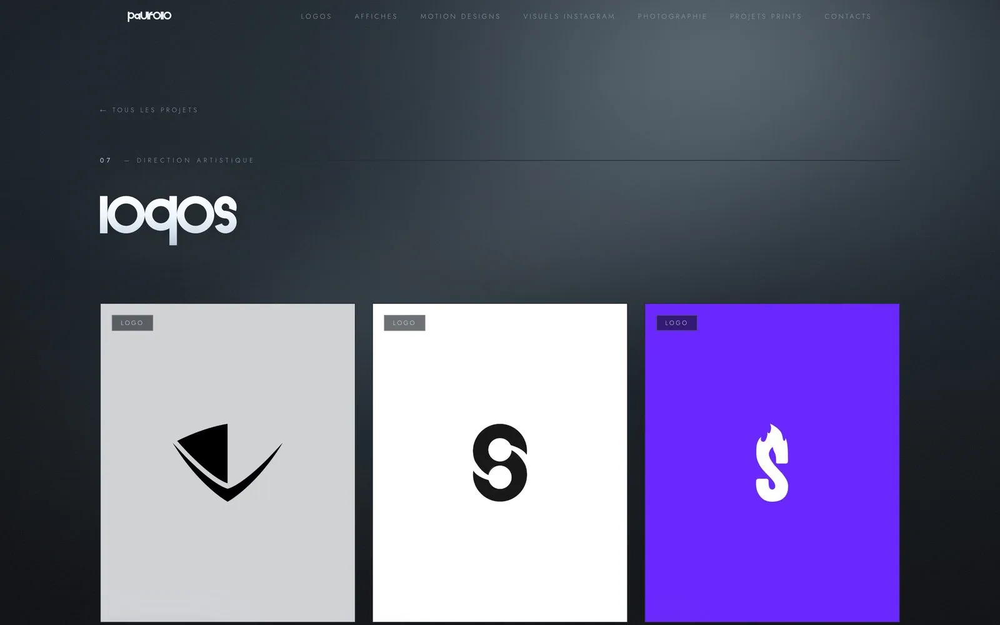
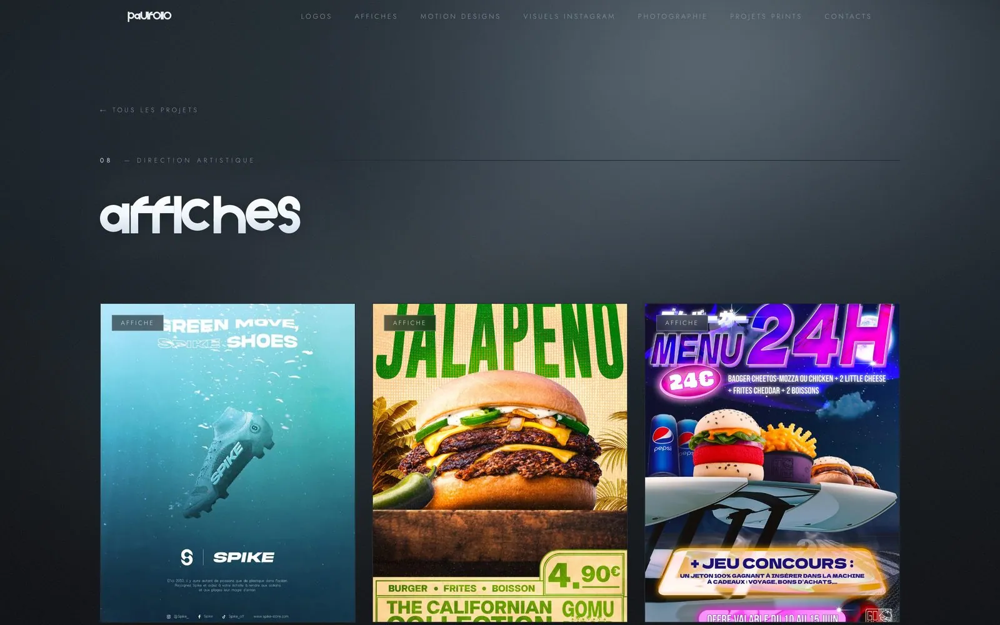
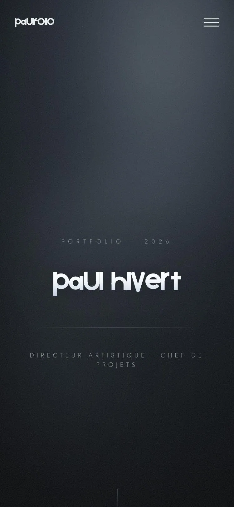

Web & Apps

Application Cupidex
En cours
Un écrin sombre et sur mesure pour le portfolio d'un directeur artistique
Paul Hivert est directeur artistique et chef de projets : logos, affiches, motion design, photographie, print. Son portfolio devait présenter une trentaine de projets sans jamais leur voler la vedette, et montrer son exigence graphique dès la première seconde.
Voir le site en ligneRécupération du code et du nom de domaine, puis inventaire complet des contenus : 6 catégories, 29 pages projets.
Une ambiance « brume » bleu-charbon avec du grain, et un lettrage géométrique dessiné sur mesure pour le titre.
Next.js et TypeScript : pages catégories, pages projets, visionneuse, vidéos, menu mobile. Rapide et entièrement responsive.
Déploiement sur Vercel, reprise du domaine paulhivert.com, redirections et HTTPS.

Un accueil sobre : un nom, un métier, et l'envie de faire défiler.

Chaque catégorie a sa page, avec les projets présentés en grand format.

Les visuels prennent toute la place : le site s'efface derrière le travail.

Sur mobile, la même ambiance, sans compromis.

En cours
Juillet 2026